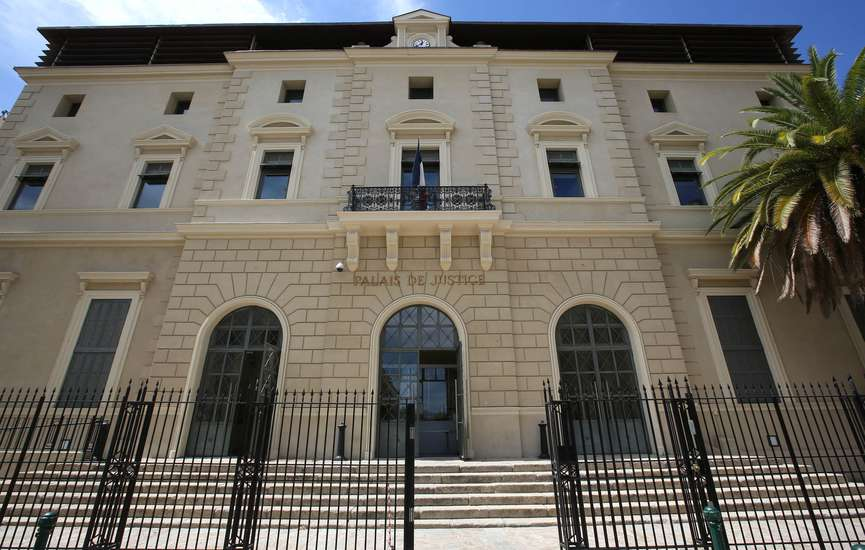

Lors de mon année de seconde ma classe a été invité par la rectrice de
l’éducation nationnal à renconstituer un procès au tribunnal d’ajaccio
pour informer les classes de Corse des violences conjugales. Mon rôle
était l’avocat du parti civil. J’ai du apprendre le langage que l’on
utilise durant un procès ainsi que son fonctionnement afin de
concevoir une défense solide et une plaidoirie final innataquable. Le
procès a été filmé au tribunnal d’ajaccio et la rectrice était
présente durant son tournage. Cet exercice m’a permie d’améliorer mon
éloquence et de découvrir le monde du tribunnal.
Cette exercice m’a permis aussi d’être plus sensibiliser aux violences
conjugales.

palais de justice d'Ajaccio
“La vengeance est une justice sauvage.”